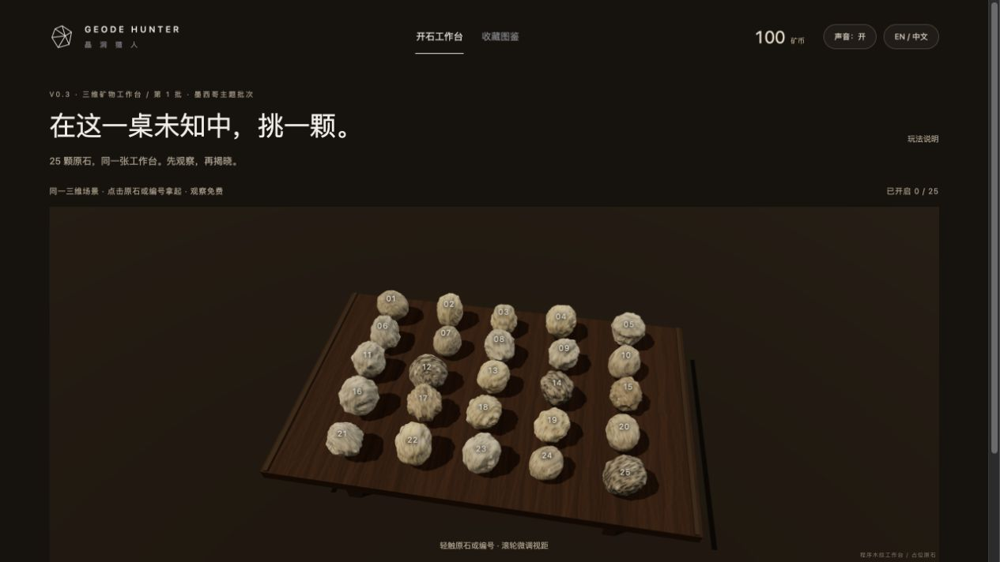
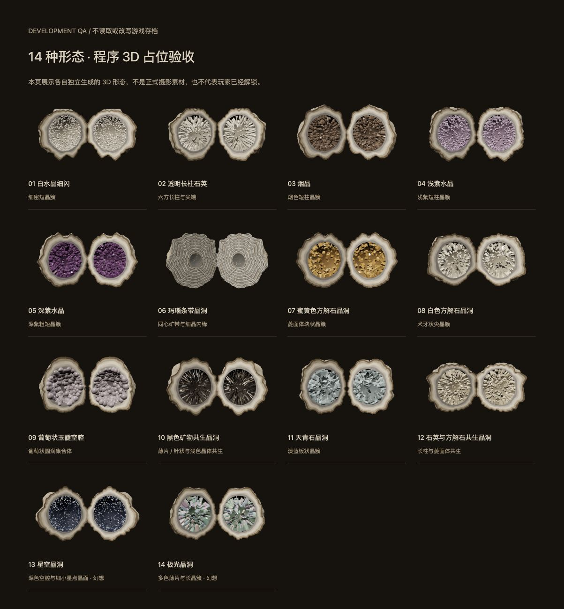
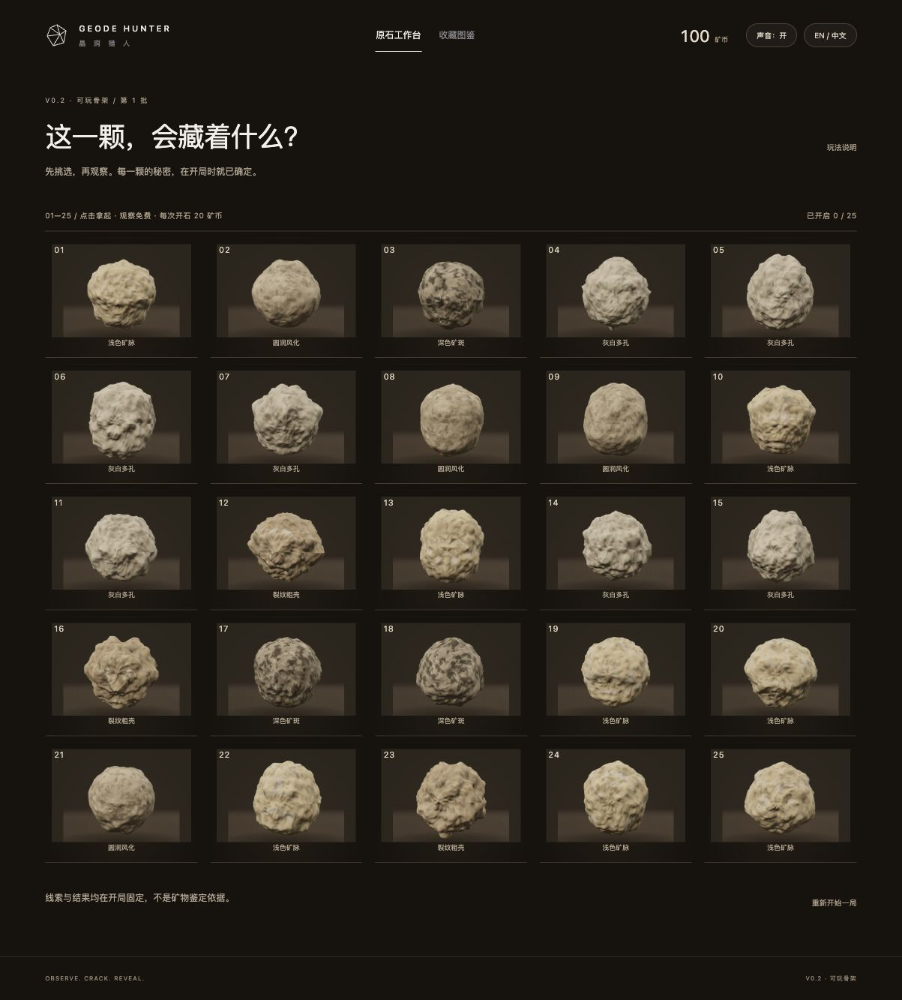
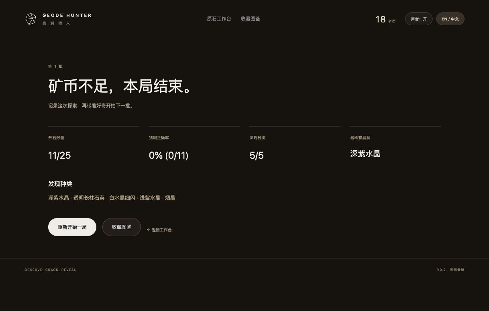
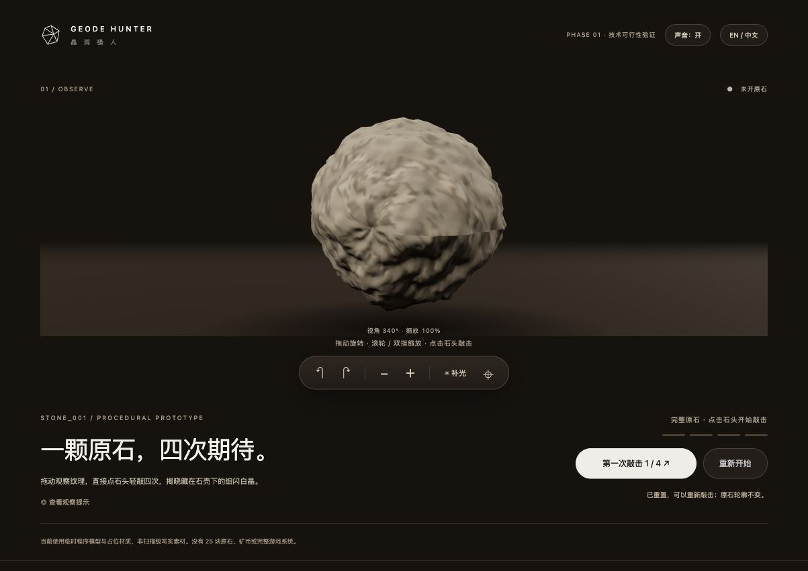
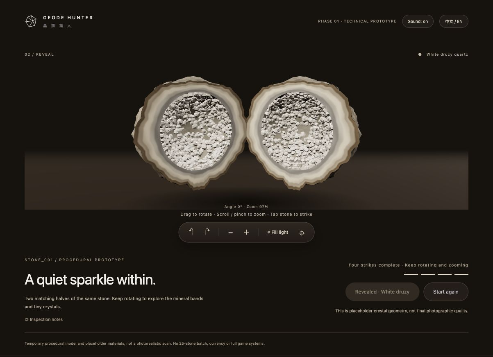
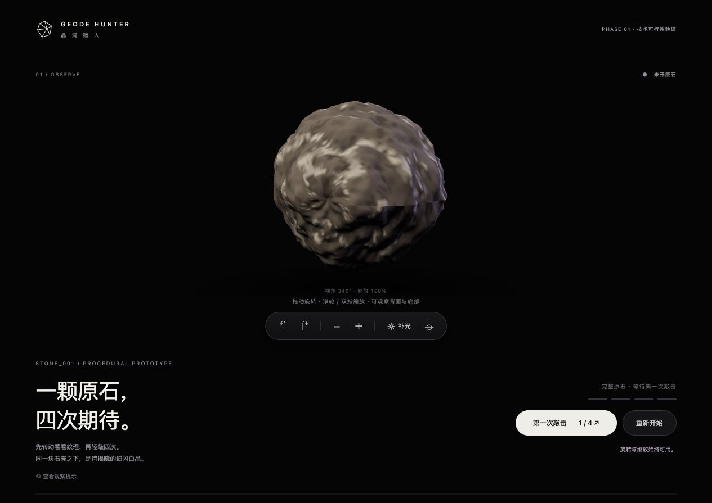
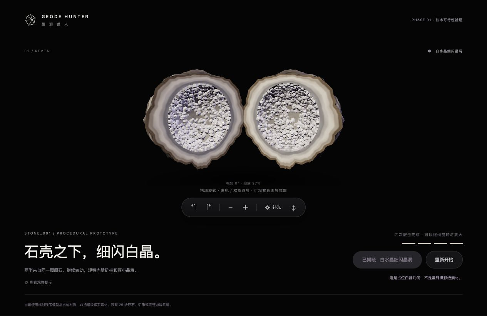
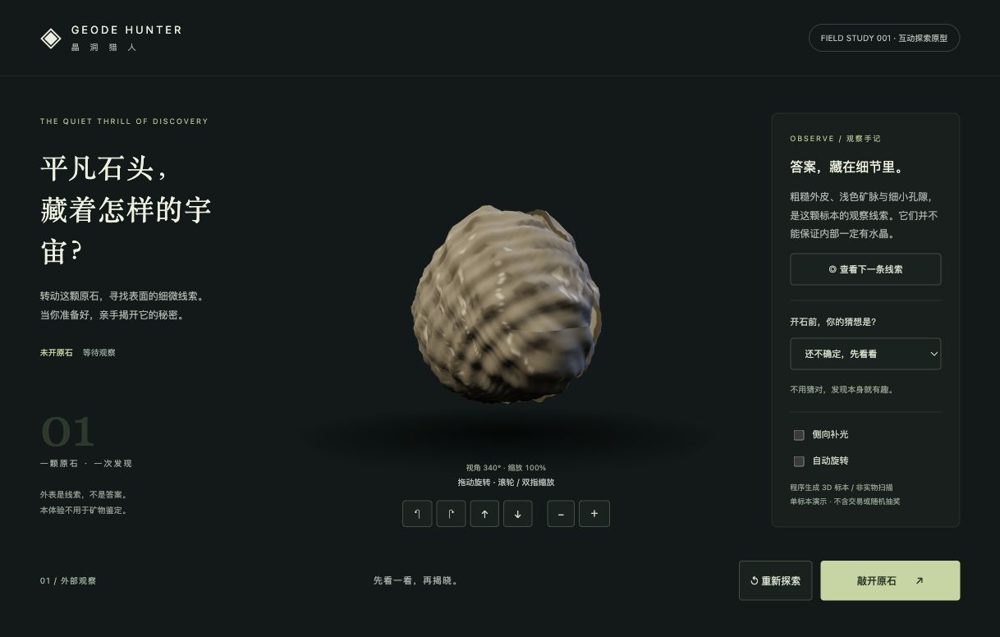
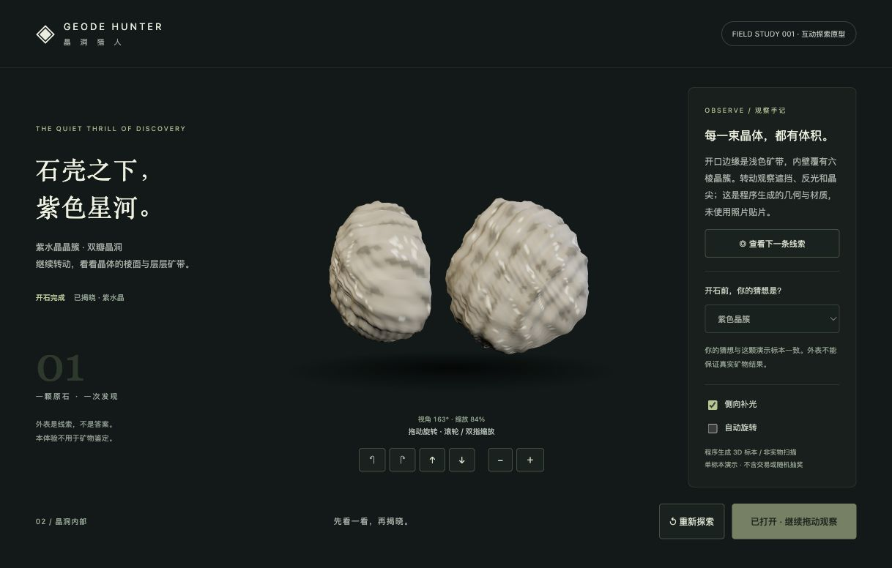

同一张桌面，
25 颗未知。
作者要求把商品卡片改成真实空间。本轮新增一个 Three.js 工作台场景：连续程序木桌、透视、投影阴影、25 个可射线拾取的原石组，摄像机靠近观察与返回。旧游戏规则与存档保留。


14 类数据与独立美术路径、锁定剪影和资料详情已接入。仍是程序占位，正式摄影/GLB 未提供。天青石未来资料；幻想约 5% 每批出现一次，不保证。
25 位置实际全部选中，13 组自动化通过，旧局迁移保留。真实测试 · 正式素材清单。他人试玩仍待补充；下方完整保留先前各阶段。
挑一颗，
揭开它的秘密。
单石可行性验证之后，作者明确授权进入 V0.2：25 原石、固定隐藏结果、免费观察、猜测支付、四击揭晓、奖励、双收藏与结算。沿用现有 3D 渲染器，正式写实素材后续替换。


没有他人真人试玩，尚非课程最终提交。下方按时间保留原始 Momo 与水晶转向的全部过程。
从按按钮到亲手点石头
直接点原石可敲击，拖动与空白处不算；本地合成撞击音可以静音，中英文切换保留进度。工作台调整为暖棕与炭灰色，正式素材仍未提供。


四次流程、语言保留与静音分支已实际操作。音频调度成功，听感尚待作者确认；实体触屏和他人试玩仍未验证。以下保留前轮报告与原始 Momo 想法。
一颗白晶，
四次敲击。
作者已补充完整 GDD 与素材规范，但明确当前不开发完整游戏。本轮只交付单颗原石的旋转、缩放、逐步裂纹和白晶双半壳揭晓。
没有 25 块原石或矿币。GLB / 贴图接口已准备，正式素材尚未提供；程序模型不是摄影级成品。


从“假装正常人”
到晶洞猎人。
一次方向调整，一段正在成形的探索体验。
第一阶段 / 假装正常人 · 千万别露馅
这次作业不是从晶洞开始。早期主题是“努力保持表情、情绪却会露出来”：先通过一个可爱角色探索鼠标操作与表情反馈。
当时已经完成 Momo SVG 少女：分层棕发、粉色蝴蝶结、眼睛高光、腮红和上半身。嘴角可独立拖动，眼睛、眉毛、脸颊会联动，松开平滑回弹。另有预设表情、重置与键盘操作。
图为当时保存的原截图。真实第一版提交为 3877c1c；当时按作者要求只做人物与表情交互，没有扩展倒计时和完整游戏。
已有原型、报告和代码均保留；改方向是在这些探索之后的新决定，不是重新假装从零开始。
查看第一版报告全文 · 打开原人物原型01 / 为什么转向水晶
作者喜欢水晶，希望用个人兴趣驱动作业。核心从社交系统收敛为人与一颗原石的互动：观察、猜测、揭晓、欣赏。
先前“假装正常人”的设计与原型已作为本报告的第一阶段保留。作者本轮也提到旧方向与社交有关；若另有旧社交报告，提供后继续原样补入，不推断或替换。
02 / 目前实际做出了什么

外部观察 · 旋转与缩放

双瓣揭晓 · 紫色晶簇与猜想反馈
程序生成几何和材质的 WebGL 原型，截图来自本轮真实浏览器。不是概念图，也不是最终美术。仅一颗固定紫水晶，没有交易、经营或社交。
打开当前原型 ↗03 / 本轮有依据的修改
- 复用前期 Three.js 几何、材质与分离动画。
- 去掉剧透线索，加入可选猜想及揭晓对照。
- 重置时清空猜想、线索序号和开关。
- 模型与文字分区，加入手势替代按钮。
这些基于代码检查和实际实现，不是真人试玩结论。
04 / 当前验证与限制
已真实查看 WebGL 画面，操作拖动、滚轮、线索、猜想、开石和重置。Three.js 存在旧构建弃用警告。没有测帧率、实体触屏或跨浏览器兼容。前期渲染器替身的 PASS 不被当作视觉验收。
05 / 接下来，而非已完成
- 作者确认视觉和互动方向。
- 请至少一位他人无讲解试玩，记录真实观察。
- 据此改进或说明保留，通过 Desktop 保存提交与截图。
- 核对课程清单和公开链接，作者确认后提交 Canvas。
截止：2026 年 11 月 1 日 23:59 香港时间。课程没有社交硬要求；真人试玩和迭代证据仍须完成。